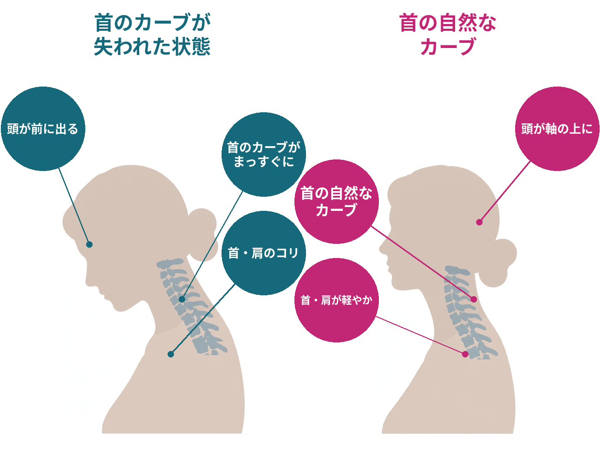

ストレートネック
美容整体ステラ・ポラリス東三国｜大阪市淀川区東三国・東三国駅徒歩5分・女性向け

スマホ首による二重あご・首のシワのお悩みに
首の骨（頸椎）は本来ゆるやかなカーブを描いていますが、スマートフォンやパソコンをのぞき込むうつむき姿勢が続くと、カーブが失われてまっすぐに近づいた状態になることがあります。これが一般にストレートネック（スマホ首）と呼ばれるものです。首まわりの緊張が続くと、あご下のもたつき感や首のシワといった見た目のお悩みとして気になる方も少なくありません。このページでは、ストレートネックの背景にある仕組みと、頭の位置が整った姿勢を目指す当サロンでのケア、ご自宅でできるセルフケアをご案内します。まずは下のチェックで、ご自身の状態を確かめてみてください。
ご予約はこちら（Coubic）こんなお悩みありませんか
- スマートフォンを見るとき、気づくといつも下を向いている
- 横から見た写真で、耳が肩より前に出ている気がする
- あご下のもたつきや二重あごが気になる
- 首の横ジワが深くなってきたように感じる
- 夕方になると首から肩にかけて重だるく感じる
- 枕の高さが合わない気がして、寝つきが悪い日がある
- あごを引く姿勢を意識しても、すぐに疲れて戻ってしまう
当てはまる項目が多いほど、うつむき姿勢のクセが首まわりに負担をかけている目安とされています。首だけを揉んでも戻りやすいのは、肩や胸、背中を含めた全体のバランスが関係しているためです。次のセルフチェックで、今の首の状態の傾向を確かめてみましょう。
簡単セルフチェック（あご引きチェック）
椅子に座ってできる、頭の位置の傾向を知るための簡単な方法です。
- 背筋を伸ばして椅子に座り、まっすぐ前を見ます。
- 指をあごに当て、頭を後ろへ水平に引くようにあごを引きます。このとき、耳が肩の真上に近づくかを確認します。
- あごが引きにくい、首の後ろがつっぱる、引くと首まわりが苦しい感じがする場合は、頭が前に出る姿勢のクセがついている目安と言われています。
※これは診断ではありません。ご自身の状態の傾向を知る目安としてお使いください。
ストレートネックの原因と仕組み
うつむき姿勢と頭の重さ
ストレートネックの背景にあるのは、頭が前に出た姿勢を長く続ける生活習慣です。まっすぐ立った姿勢では、頭の重さは背骨の上にのって支えられますが、うつむく角度が大きくなるほど、首の後ろ側の筋肉が頭を支えるために働き続けなければならず、負担が増えると言われています。スマートフォンを低い位置で見る姿勢はその代表です。図1のように、頭の位置が前にずれることは、首だけでなく肩や胸、背中の見え方にもつながっていきます。

図1 ストレートネックの姿勢で起こりやすい変化と、頭の位置が整った姿勢のイメージ。姿勢の状態には個人差があります。
首まわりの筋肉のバランス
首の前側には、頭を前に倒すときに働く筋肉があり、後ろ側には頭を支えて引き上げる筋肉があります。うつむき姿勢が続くと、前側は縮んだまま、後ろ側は引き伸ばされながら力を出し続ける状態になりやすく、このアンバランスが首の重だるさや動かしにくさの背景になると考えられています。
肩・胸・背中とのつながり
首の状態は、首だけで決まるものではありません。猫背や巻き肩で胸が縮こまると頭はさらに前に出やすくなり、反対に胸が開いて背筋が伸びると、頭は自然と軸の上にのりやすくなります。
あご下や首のシワなど、見た目への影響
頭が前に出た姿勢では、あご下の皮膚や筋肉がたるんだように見えやすく、二重あごの印象につながることがあります。また、首を曲げた姿勢がクセになると、首の横ジワも目立ちやすくなります。頭の位置が整い、あごが自然に引ける姿勢になると、首からあごにかけてのラインはすっきり見えやすくなります。
セルフケアで足りる場合・サロンケアが向く場合
違和感が軽く、スマートフォンの持ち方や枕の高さを見直したあとに首が軽く感じる日が多い場合は、まずご自宅でのセルフケアと環境の見直しで様子を見る方法があります。一方で、首まわりが自分ではゆるめにくい、あごを引いた正しい頭の位置の感覚がつかみにくい、横顔のラインやあご下のもたつきもあわせて整えたいという場合は、サロンでのケアが向いている目安になります。サロンでは、肩・胸・背中の土台からゆるめて頭の位置を整えることで、施術後に「首が軽くなった」「あごが引きやすい」と感じやすい状態を目指します。どちらが正解というものではなく、今の状態に合わせて選ぶことが大切です。
当サロンでのケア
当サロンのストレートネックケアは、「頭の位置が身体の軸の上にのる姿勢」を目指す組み立てです。首そのものを強く揉むのではなく、まず土台からゆるめ、部位と目的に合わせて3つの手技を組み合わせます。
美容整体：頭の位置と首のラインを整え、あごを引いた自然な姿勢の土台をつくることを目的に。鏡で横顔を確認しながら、無理のない範囲で進めます。
アロマオイルマッサージ：首・肩・胸まわりの緊張をオイルでゆるめ、首が動きやすい状態を目指します。香りに包まれながらほぐれる、リラックス感の高いケアです。
もみほぐし：首の後ろから肩、背中にかけて固まりやすい筋肉をほぐし、重だるさの背景になりやすいコリをゆるめることを目的に進めます。
ケアを通して目指すのは、こんな変化です。
- 頭の位置が整って、横から見た首のラインがすっきり見える姿勢へ
- あごが引きやすくなり、あご下のもたつき感が気になりにくい印象へ
- 首・肩のコリをほぐして、夕方の重だるさを感じにくい状態へ
- 胸が開いて、首からデコルテにかけてのラインがきれいに見える姿勢へ
- 深い呼吸がしやすくなり、リラックスしやすい体感へ
施術の前後では、鏡を見ながら横顔のラインを一緒に確認し、「首が軽くなった」「あごが引きやすい」といった感覚の違いを確かめます。姿勢のクセは一日で変わるものではありませんが、正しい頭の位置の心地よさを知ることが、日常の姿勢を見直すきっかけになります。

施術の流れ
ご来店後、気になる部位やお悩み、ご希望の強さなどをうかがいます。完全個室のため、周りを気にせずお話しいただけます。
頭の位置や首の動かしやすさ、あごの引き具合などを一緒に確認し、その日の状態に合わせた施術の進め方をご案内します。
美容整体を中心に、ご希望に応じてアロマオイルマッサージ、もみほぐしを組み合わせて進めます。強さは途中でも調整できます。
施術後の状態を確認し、ご自宅で続けやすいセルフケアのポイントをお伝えします。次回の目安についても、ご希望があればご案内します。
料金
| コース | 通常価格 | キャンペーン価格（12/25まで） |
|---|---|---|
| 80分 | 8,000円 | 3,000円 |
| 100分 | 10,000円 | 4,000円 |
| 120分 | 12,000円 | 5,000円 |
クリスマスキャンペーンは12月25日まで、ご新規様もリピーターの方も対象です。施術内容は当日の状態とご希望に合わせて組み立てます。
ご自宅でできるセルフケア
- スマートフォンの高さ調整：スマホは目の高さに近づけて使う時間を増やし、うつむき姿勢が続く時間を減らします。こまめに持ち替える意識を続けることが目安です。
- あご引きエクササイズ：指をあごに当てて頭を水平に後ろへ引き、5秒キープします。5回を1セットとして1日2〜3セットが目安です。痛みのない範囲で行ってください。
- 蒸しタオルで温める：首の後ろを蒸しタオルで温めたあと、ゆっくり左右に倒すストレッチをします。1回5分ほど、入浴後のリラックスした時間に行うのがおすすめです。
- 枕の高さの見直し：高すぎる枕はあごが上がり、首のカーブと合いにくくなることがあります。寝たときに首のカーブに沿う高さを意識して選んでみてください。
ご自宅でのケアに：セルフケア資料ライブラリ（無料）
このお悩みに合わせたセルフケアの考え方を、無料の資料ライブラリでご紹介しています。
セルフケア資料ライブラリを開く →
受診の目安
手のしびれや力の入りにくさ、めまいを伴う場合は、施術の前に医療機関で相談されることをおすすめします。また、首の痛みが日ごとに強くなる場合や、転倒などのきっかけのあとに症状が出た場合も、まずは医療機関でご相談ください。
よくある質問
Q. 初めてでも大丈夫ですか？
はい。当サロンは完全予約制・完全個室で、1日3組までのご案内です。最初にカウンセリングで姿勢のクセや気になる部位をうかがい、無理のない内容から始めます。施術の前後で鏡を見ながら「首が軽くなった」「横顔のラインが変わった」といった感覚の違いを一緒に確認しながら進めますので、初めての方も安心してご利用いただけます。
Q. 施術は痛いですか？
強さは、ご希望をうかがいながら調整します。首はデリケートな部位のため、強い力で揉むのではなく、まず肩や背中の土台からゆるめていく進め方を大切にしています。感じ方には個人差がありますので、施術中も遠慮なくお声がけください。
Q. コースはどう選べばいいですか？
80分・100分・120分のコースがあり、ケアしたい部位の広さやお時間のご都合に合わせて選べます。ストレートネックのケアで首・肩から背中、胸まわりまでゆっくり整えたい方には、100分が選ばれることが多いコースです。迷われる場合は、ご予約の際にお気軽にご相談ください。
Q. 場所と予約方法を教えてください。
大阪市淀川区東三国、東三国駅から徒歩5分です。完全予約制のため、予約サイト（Coubic）またはLINE公式アカウントからご予約をお願いしています。
Q. 男性も受けられますか？
当サロンは女性向けのため、男性の方は、同じ東三国の男性専用整体院「北辰堂」をご案内しています。
施術者について
平賀建人（施術歴30年）
鍼灸師・登録販売者・アロマセラピスト・パーソナルトレーナーの資格を持ち、美容整体を中心に、アロマオイルマッサージ、もみほぐしを、その日の状態とご希望に合わせて組み合わせて施術します。このページの内容は、施術者の知識と経験をもとに作成しています。

料金・ご予約
ご新規様もリピーターの方も 12/25まで
80分 3,000円／100分 4,000円／120分 5,000円
通常価格は80分8,000円／100分10,000円／120分12,000円です。施術内容はご希望に合わせて組み立てます。
営業時間：月〜土 17:00〜23:00／日 10:00〜23:00（完全予約制）｜電話：080-2468-3086
大阪府大阪市淀川区東三国2丁目25番4号101（東三国駅徒歩5分）